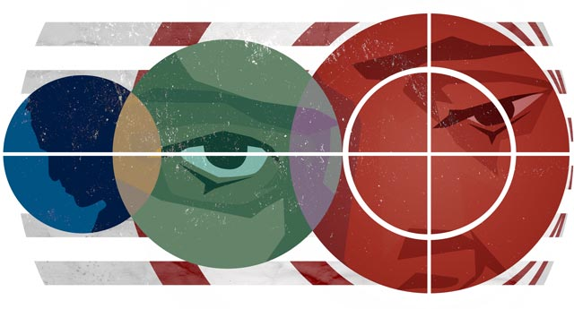

Terrorism has had a significant impact on countries around the world, including India, the United States, China, Brazil, and Australia. Each of these nations has faced its share of terrorist attacks, with some of them being particularly devastating.
-
India: In 2008, Mumbai witnessed one of the deadliest terrorist attacks when a group of gunmen carried out a coordinated assault, killing over 160 people and injuring hundreds more.
-
United States: The infamous 9/11 attacks in 2001 involved the hijacking of four planes by Al-Qaeda terrorists, resulting in nearly 3,000 lives lost, including the World Trade Center tragedy.
-
China: China's Xinjiang region has faced terrorism from the East Turkestan Islamic Movement (ETIM). In 2014, a mass stabbing at the Kunming Railway Station left dozens dead.
-
Brazil: The 1993 Candelária Church massacre in Rio de Janeiro was a tragic event where gunmen attacked homeless children, leaving eight dead and several injured.
-
Australia: The 2014 Sydney hostage crisis, also known as the "Sydney Siege," was a terrorist incident that took place in December 2014 in Sydney, Australia. A lone gunman, Man Haron Monis, held hostages inside a cafe in the central business district of Sydney.
ATTACK TYPES
Terrorist attacks come in various forms, each with its own distinct characteristics:
- Armed Assault: Involves the use of firearms or other weapons to launch a violent assault, often in public places or against specific targets.
- Assassination: Refers to the deliberate killing of an individual, often a prominent figure or public official.
- Bombing/Explosion: Entails the use of explosives to inflict widespread damage and casualties, and it is a method frequently employed by terrorists seeking maximum impact.
- Facility/Infrastructure Attack: Targets critical infrastructure such as power plants, transportation hubs, or communication networks.
- Hijacking: Involves the unlawful seizure of vehicles, typically planes or ships, to make political demands or cause fear.
- Hostage Taking (Barricade Incident): Is a tactic where hostages are held in a barricaded location.
- Hostage Taking (Kidnapping): Involves the abduction of individuals to pressure governments or organizations for specific concessions.
TARGET TYPES
Terrorist attacks target several different aspects, causing damage and harm.
- Airports & Aircraft: Targets aviation-related facilities and vehicles, often for disruption or destruction.
- Business: Includes attacks on commercial enterprises, such as companies and industries.
- Educational Institution: Involves attacks on schools, colleges, and other educational facilities.
- Government: Targets government buildings, officials, or institutions as a political statement.
- Journalists & Media: Attacks on journalists, media organizations, or outlets to control information dissemination.
- Military: Targets armed forces, military installations, or personnel as part of a conflict.
- Police: Involves attacks on law enforcement agencies or officers.
- Private Citizens & Property: Includes attacks on civilians and their personal belongings.
- Religious Figures/Institutions: Targets religious leaders, places of worship, or religious gatherings.
- Terrorists/Non-State Militia: Attacks by one terrorist group on another or by non-state militias.
- Tourists: Targets tourists or tourist destinations to undermine local economies.
- Transportation: Involves attacks on transportation infrastructure, such as trains, buses, or subways.
- Utilities: Targets utilities like power plants, water supplies, or communication systems.
WEAPON TYPES
Terrorist attacks employ various weapon types, each with its own characteristics and effects.
- Chemical: Involves the use of chemical substances as weapons, which can have toxic or harmful effects.
- Explosives: Includes the use of explosive devices to create powerful blasts, causing widespread damage.
- Firearms: Utilizes guns and firearms to launch armed attacks, often with lethal consequences.
- Incendiary: Involves the use of fire or incendiary devices to ignite and spread fires, causing destruction.
- Melee: Refers to close combat or hand-to-hand combat using weapons like knives, clubs, or other melee weapons.
Terrorist attacks often target specific nationalities for various reasons, including political, ideological, religious, or cultural motivations. These attacks can have devastating consequences for the individuals and nations involved.
Terrorist attacks frequently single out specific nationalities as their victims, with motivations ranging from political agendas to religious extremism. These attacks aim to instill fear, spread propaganda, or advance a particular ideology. Such acts of violence can lead to tragic loss of life, injuries, and long-lasting psychological and social impacts on both the targeted nationality and the global community. Counterterrorism efforts often focus on identifying and mitigating the risks associated with nationality-based attacks, emphasizing international cooperation and intelligence sharing to enhance security and protect vulnerable populations.

TERRORISM, a formidable global challenge, has left an indelible mark on the world. It is a multifaceted problem that transcends borders, ideologies, and cultures, posing threats to the security and stability of nations. Terrorism takes on various forms, from suicide bombings and cyberattacks to insurgency and hostage situations. Addressing this menace requires a multifaceted approach, involving not just military and intelligence responses but also efforts to address the root causes. Socioeconomic disparities, political conflicts, and religious extremism often fuel terrorism, making it crucial to work toward lasting solutions.
In the fight against terrorism, international cooperation and intelligence sharing play pivotal roles. Nations collaborate to prevent attacks, dismantle terrorist networks, and bring perpetrators to justice. Yet, it is equally important to promote dialogue, understanding, and tolerance among communities and nations.
Building a world free from the fear of terrorist acts necessitates education, empathy, and opportunities for those susceptible to extremist ideologies. Governments, civil society, and individuals must work hand in hand to counter radicalization, rehabilitate former extremists, and create an environment of peace and security.
As we confront terrorism, it is vital to remember that this battle is ongoing, evolving as new threats emerge. Nevertheless, resilience, unity, and the commitment to shared human values can help us create a safer, more peaceful world. By addressing the root causes, strengthening international partnerships, and promoting peace, we can make significant strides toward a future where terrorism holds no sway over our lives, and we can live in a world free from the shadow of terror.